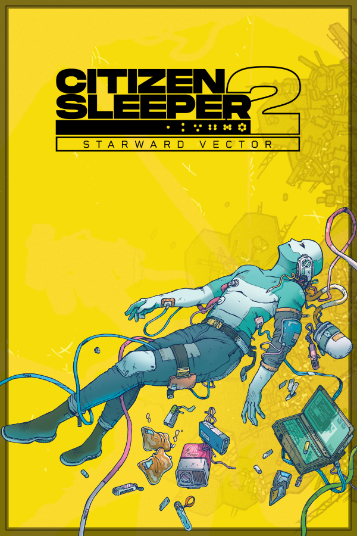

Citizen Sleeper 2: Starward Vector
Every archived year-end list appearance, including placement and points earned.
About the Game
Buzz“For fans of tabletop games, good sci-fi writing, and risk-reward decision-making, Citizen Sleeper 2 is a must-play indie game for 2025.”- Game Rant“The first true GOTY”- Easy Allies“It's living up to the hype. It's a contender.”- Kinda Funny Games About the GameThe highly anticipated sequel to one of 2022’s most acclaimed RPGs, Citizen Sleeper 2: Starward Vector takes players to the Starward Belt, a richly realised, ramshackle set of habitats in an asteroid belt full of secrets, stories, and characters trying to make ends meet.You are a sleeper, an emulation of a human mind housed in an artificial body. You are on the run from the corporation that made you and the gang that seeks to control you. Commandeer a ship, build a network of crew and allies, and take on challenging contracts as you seek to build a future for yourself.Choose a class, configure your skills and assemble your crew in unique tabletop-inspired gameplay. Your future depends on the roll of a dice, as you make difficult choices in a complex world. Reinventing the award-winning systems of Citizen Sleeper, this dice-driven RPG will satisfy both fans of the original game and new players alike. To stay one step ahead of your pursuers you’ll need three things: A belt-worthy ship, a tight crew and a contract or two. The ship you stole. It’s a ragged old Rig that’s seen better days, but it’s all you’ve got. Upgrade your ship to extend its range, reach new locations and turn it from a hovel to a home. Your crew starts with Serafin, your fellow escapee and a rock-solid pilot. But you’ll need scrappers, engineers and all sorts to take on the work that’ll keep you flying. From temporary contractors to new residents of the Rig, each of these characters has their own story, skills and troubles. Choose carefully. Contracts take place far from the bars and shops of the Belt’s many hubs. These high-risk jobs each have their own challenges. From exploring treacherous derelicts and risky heists, to asteroid surveying and ship repair, you’ll need to make the most of your skills, crew and resources to complete the contract and get paid. Soon after escaping from your corporate overlords, you fell under the control of a local criminal gang and its leader, Laine. Now, after a desperate attempt to free yourself from servitude by rewriting the very code that governs your system, you are on the run again, this time with a malfunctioning body, a price on your head and no memory of your past. Each character class now has a unique “Push” ability, upgradable and customisable, that can help you turn the tide of a difficult job or send you into a dangerous spiral depending on how and when you choose to use it. Reroll your dice to change your fate, or focus a single die to bet everything on a big success. Each class offers different tactical possibilities.Nothing in the Belt ever runs smooth, including your artificial body. Citizen Sleeper’s revolutionary dice system returns, revised for the sequel. Manage your stress or take damage to your dice. Deal with glitches as they accrue in your system. Push yourself to get lucky and make this cycle count.Contracts offer a new kind of focussed, tactical gameplay to the Citizen Sleeper experience. You’ll need to prepare carefully and choose the right approach for these multi-cycle, high-risk, high-reward jobs, but you’ll also have to react and adapt to both the roll of the dice and the twists and turns of each task. The Starward Belt offers a bigger, more varied world than the original game. Instead of living on a single station, you'll chart a course from hub to hub with complete freedom, taking on jobs and setting goals as you see fit. A living world, the Belt rewards curiosity and care, but it's up to you to decide which locations and stories deserve your time and resources. Player choice is a massive part of the Citizen Sleeper experience, and the sequel deepens this with new skill checks that allow you to express your class and character in scenes, as well as branching storylines that will ask you to make hard choices. The future of your character is up to you.ABOUT THE DEVELOPERJump Over the Age is a one-person game development studio founded by Gareth Damian Martin (they/them). Gareth is the winner of GDCA and Indiecade awards, and has been nominated for a Games Award, multiple IGF Awards, a GDC Award, and four BAFTAs. They have been named both “An accomplished world-builder” (Edge Magazine) and “one of the most exciting indie talents around” (Eurogamer).For Citizen Sleeper 2: Starward Vector Gareth is once again joined by renowned comic book artist, Guillaume Singelin and celebrated composer, Amos Roddy - the same exceptionally talented development team responsible for Citizen Sleeper’s moving narrative, eye-popping art and immersive music and sound.
| Released | 2025-01-31 |
|---|---|
| Developer | Jump Over The Age |
| Publisher | Fellow Traveller |
| Genres | Adventure, RPG, Indie |
| Platforms | Nintendo Switch, macOS, PC |
SingleplayerSteam AchievementsFull controller supportSteam CloudAtmosphericRPGStory RichSci-fiExplorationSpacerole-playingWar
Game information provided by RAWG.
Points by Year
List History
| Year | Source | List | Placement | Points |
|---|---|---|---|---|
| 2025 | Eurogamer | The 50 best games of 2025, ranked | 36 | 1 |
| 2025 | Financial Times | The 10 best games of 2025 | Unranked | 5 |
| 2025 | Geeky Brummie | Top 50 Most Notable Games of 2025 | 31 | 1 |
| 2025 | NPR | The best games of 2025, picked by NPR's staff | Unranked | 1 |
| 2025 | Rolling Stone · Christopher Cruz | The 25 Best Video Games of 2025 | 22 | 3 |
| 2025 | Slant Magazine | The Best Video Games of 2025 | 14 | 3 |
| 2025 | TechRadar | TechRadar Gaming’s Game of the Year list 2025: our top 20 games from this year | 19 | 3 |